Practical guides
Original guides explaining calendar rules, age formats, common mistakes and the conventions that make two calculators disagree. Each one links to the calculators it describes.

How to Calculate Exact Age in Years, Months and Days
Exact age is a calendar interval built from three separate counts, which is why dividing days by 365 never reproduces it.
Read the guide →
Chronological Age: What It Measures and What It Doesn't
Chronological age is elapsed calendar time between two dates — objective, reproducible, and different from every other kind of age.
Read the guide →
Calendar Age vs Decimal Age: Which One Does Your Form Want?
Calendar age preserves years, months and days; decimal age expresses the same span as a fraction of an average year.
Read the guide →
Working Out Your Age on a Past Date
A historical age calculation uses the event date as the reference point, not today — and that is the input people forget to change.
Read the guide →
How Old Will I Be on a Future Date?
Future-age planning compares a birth date with a specific target date — and near a birthday, the year alone is not enough.
Read the guide →
Leap-Day Birthdays: Ageing Normally, Celebrating Awkwardly
People born on 29 February age continuously like everyone else — it is the anniversary convention in non-leap years that varies.
Read the guide →
Why Month Length Changes the Answer
Months run from 28 to 31 days, so any calculation that treats them as a fixed size drifts away from the calendar immediately.
Read the guide →
Age Difference vs Date Difference: Same Arithmetic, Different Question
Age difference compares two birth dates; date difference compares any two dates. The calculation is identical and the interpretation is not.
Read the guide →
Finding a Birth Year From a Known Age
An age and a date usually identify a range of possible birth dates, not one — because the birthday may or may not have passed.
Read the guide →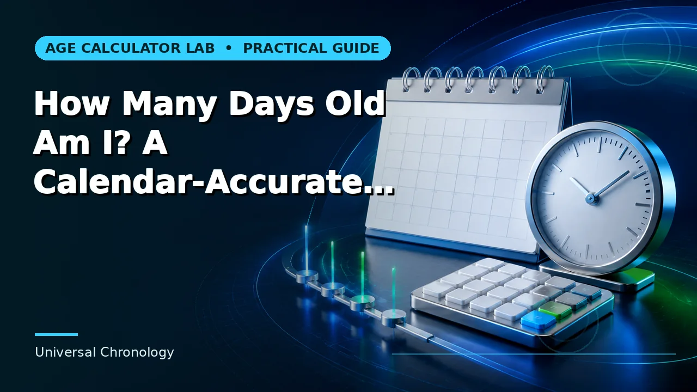
How Many Days Old Am I?
Total days lived is a count of midnights crossed, which makes it exact — no month lengths, no conventions, no rounding.
Read the guide →
Age in Weeks, Months and Hours: Picking the Right Unit
Each unit answers a different question, and some of them are exact while others are derived approximations.
Read the guide →
Why Every Age You Record Needs Its Date
Age is elapsed time, so a recorded age is only true on one day — and nothing in the number signals when that day was.
Read the guide →
Chronological Age for Standardised Assessments
Norm-referenced tests select an age band from the child's age on the test date, which makes the reference date as important as the arithmetic.
Read the guide →The Y;M;D Format for Age Records
Y;M;D writes completed years, months and days as three separate fields — it is a presentation format for a calendar result, not a decimal number.
Read the guide →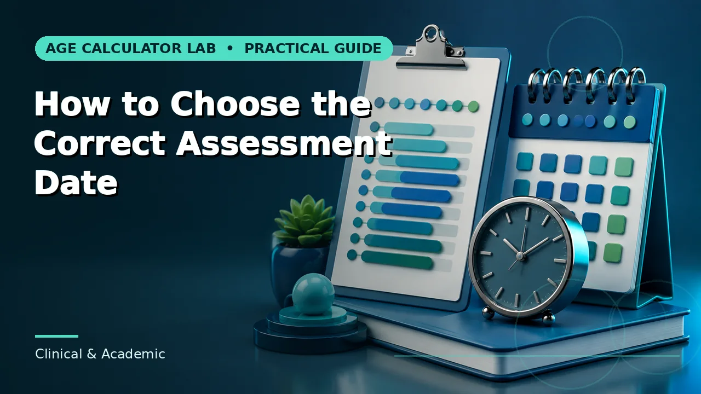
Choosing the Correct Assessment Date
The reference date is a decision made by the test manual, not a convenience — and it is the input most often left on a default.
Read the guide →
BRIGANCE Age Calculation: What the Calculator Does and Doesn't Do
BRIGANCE screening workflows need chronological age on the screening date, in the format the product materials specify.
Read the guide →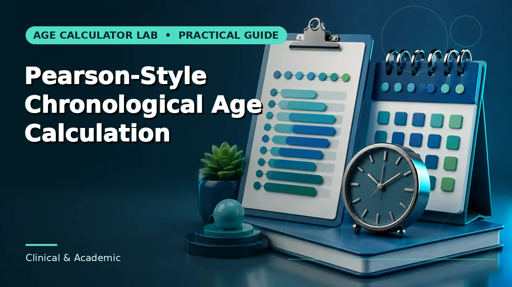
Pearson-Style Chronological Age Calculation
Several widely used instruments record calendar age in years, months and days for norm-table selection — the format is shared, the rules are not.
Read the guide →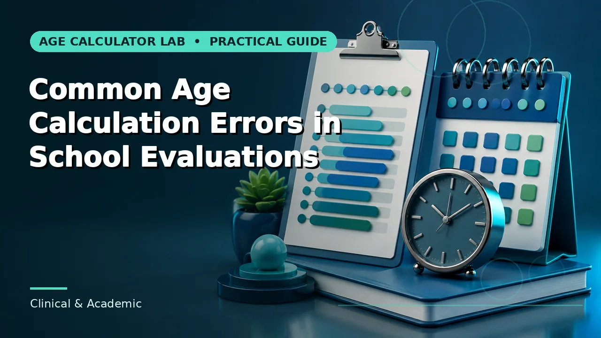
The Age Calculation Errors That Actually Occur in School Evaluations
Almost every real error is an input problem or a reference-date problem — not a failure of arithmetic.
Read the guide →
Age Bands and Cutoff Dates: Working Near a Boundary
A band turns a continuous age into a category, which means a one-day difference at the wrong point changes the category.
Read the guide →
Documenting an Age Calculation So It Can Be Rebuilt
A recorded age that cannot be reproduced is not evidence — it is a number someone once believed.
Read the guide →
Corrected Age for Premature Babies: A Parent's Guide
Corrected age subtracts how early a baby arrived from their chronological age, so development is compared against the right timeline.
Read the guide →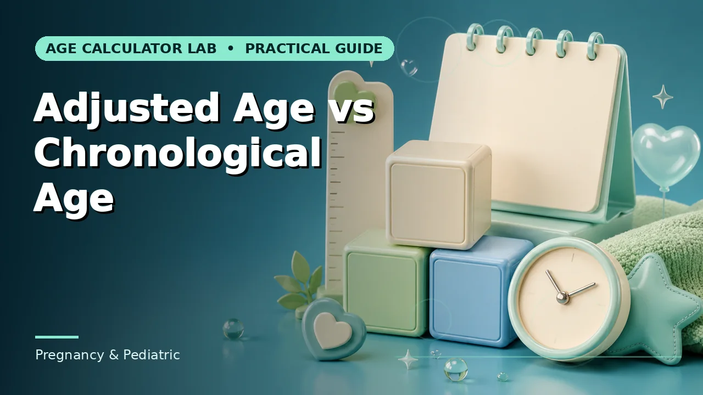
Adjusted Age vs Chronological Age: Which Number Goes Where
The two ages answer different questions, and most confusion comes from a record that shows one without saying which.
Read the guide →
Gestational Age vs Fetal Age: Two Weeks Apart by Definition
Gestational age counts from the last menstrual period; fetal age estimates time since conception, and is about two weeks less.
Read the guide →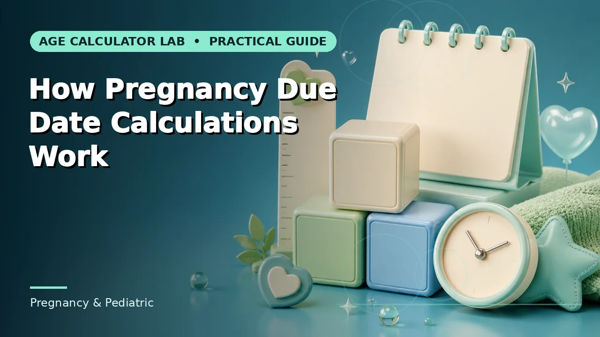
How Due Dates Are Calculated — and What They Actually Predict
The standard model adds 280 days to the last menstrual period, producing the centre of a range rather than a scheduled event.
Read the guide →
Tracking a Baby's Age in Weeks
Weeks are the right unit in early infancy because a calendar month is too coarse for how fast things change.
Read the guide →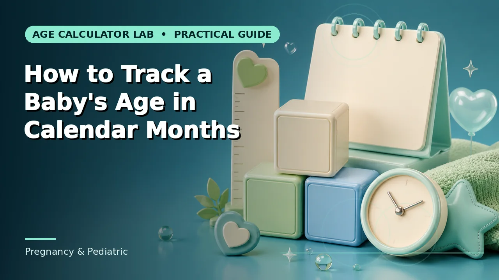
Tracking a Baby's Age in Calendar Months
Calendar-month age advances on the matching day of each month, which means it does not advance every 30 days.
Read the guide →
When Does Corrected Age Stop Being Used?
There is no universal cutoff — the point at which correction stops depends on the purpose, the child and the guidance being followed.
Read the guide →
Corrected Age: A Worked Example, Step by Step
Doing the two calculations separately — chronological age, then the prematurity interval — is what keeps the result reproducible.
Read the guide →
How a Birthday Countdown Actually Works
Build this year's birthday first, then advance a year only if it has already gone — that single rule handles every case including the day itself.
Read the guide →
What a Golden Birthday Is, and When Yours Falls
Your golden birthday is the one where your age matches the day of the month you were born — turning 18 on the 18th.
Read the guide →
Half Birthdays: Six Months, Not 182 Days
A half birthday is six calendar months after your birthday, which is somewhere between 181 and 184 days depending on where it falls.
Read the guide →When Will You Be 10,000 Days Old?
Ten thousand days is about 27 years and 4 months — and unlike a birthday, the exact date requires actual counting.
Read the guide →
Your Billion-Second Birthday
One billion seconds is 11,574 days — about 31 years and 8 months — and the exact moment depends on a birth time most people do not have.
Read the guide →Planning a Milestone Birthday Date
A milestone birthday is a calendar anniversary, so it is found by adding whole years to the birth date — not by adding days.
Read the guide →Working Out School Starting Age
School entry compares a child's date of birth with an official cutoff date, and the cutoff is local, specific and subject to change.
Read the guide →
Kindergarten Cutoff Dates: Reading the Rule Precisely
A cutoff is a policy boundary, and the wording around it decides outcomes for children born within a day of it.
Read the guide →Calculating Age on an Exam Date
Exam age limits are measured on a date named by the awarding body, which is often not the date you register.
Read the guide →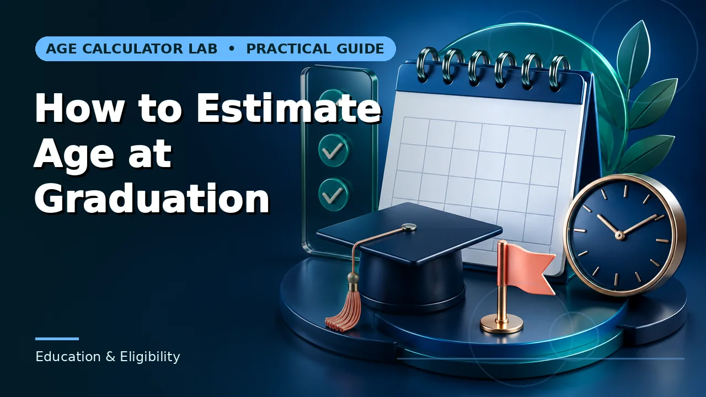
Estimating Age at Graduation
Graduation age is exact once the ceremony date is fixed, and a planning estimate until then.
Read the guide →Finding the Date You Reach Driving Age
The birthday is one condition among several — graduated licensing systems add training, supervision and waiting periods on top.
Read the guide →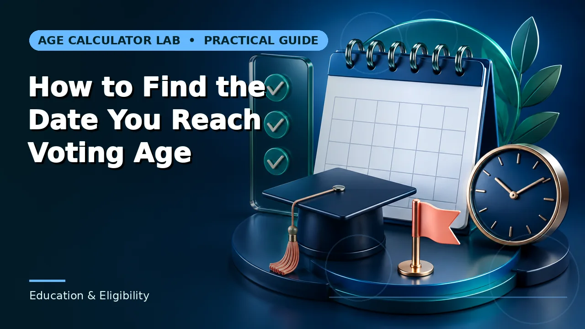
The Date You Reach Voting Age — and the Deadline That Matters More
Reaching voting age is a birthday calculation; being able to vote usually depends on a registration deadline weeks earlier.
Read the guide →
Calculating Years of Service Accurately
Calendar duration is arithmetic; credited service is policy. The two are frequently different and only one of them decides entitlements.
Read the guide →
Work Anniversaries and Service Milestones
A work anniversary repeats the start date each year; a service milestone counts completed years. They usually agree and occasionally do not.
Read the guide →
Calculating a Retirement Date From a Target Age
Reaching a target age is arithmetic. When benefits actually start is a plan rule, and the two dates are rarely the same.
Read the guide →Career Length vs Employment Duration
Employment duration measures one continuous role; career length spans several, and the gaps and overlaps have to be handled deliberately.
Read the guide →Planning With Business Days: Buffers That Survive December
Business-day planning fails in the same place every time — the final fortnight, where weekends and holidays cluster.
Read the guide →
Dog Years to Human Years: Why Size Changes Everything
The seven-to-one rule fails at both ends — dogs mature far faster in year one, then age at rates that depend heavily on size.
Read the guide →
Cat Years to Human Years
Cats mature fast and then age slowly, and unlike dogs, size and breed make comparatively little difference.
Read the guide →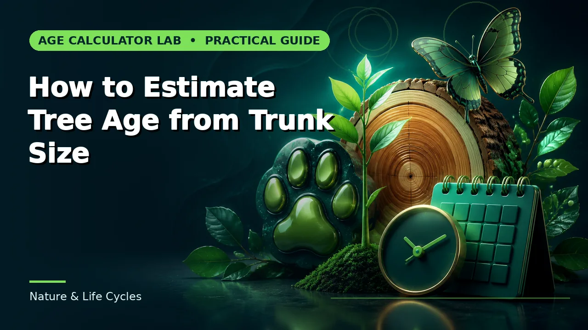
Estimating a Tree's Age From Its Trunk
Measure the circumference, convert to diameter, multiply by a species growth factor — and treat the result as a broad estimate.
Read the guide →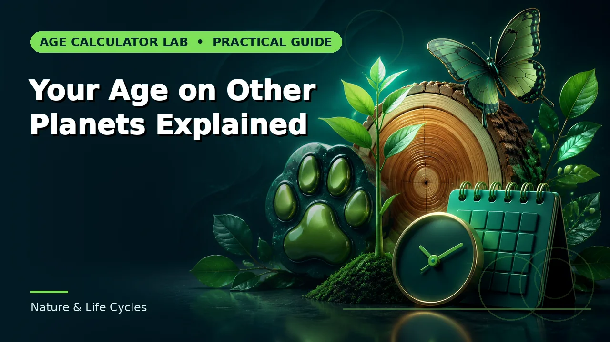
Your Age on Other Planets
Divide your Earth age by another planet's orbital period and you get how many of its years you have lived through.
Read the guide →
Estimating How Many Heartbeats You Have Lived
Multiply elapsed minutes by an assumed average heart rate — an arithmetic exercise whose answer is entirely governed by the rate you pick.
Read the guide →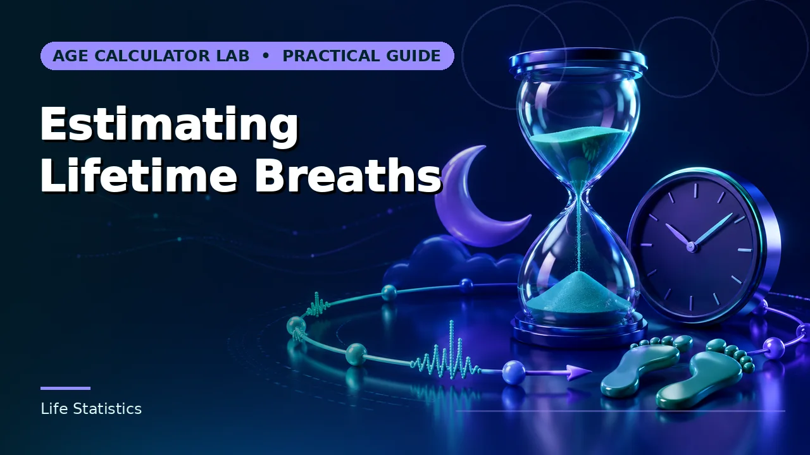
Estimating Lifetime Breaths
Elapsed minutes multiplied by an assumed breathing rate — a calculation dominated entirely by the rate you assume.
Read the guide →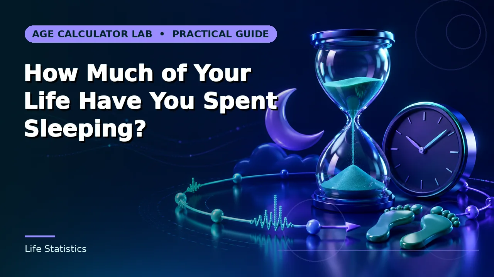
How Much of Your Life Have You Spent Asleep?
Days lived multiplied by average nightly sleep, divided by 24 — a straight-line model that ignores how much sleep changes across a life.
Read the guide →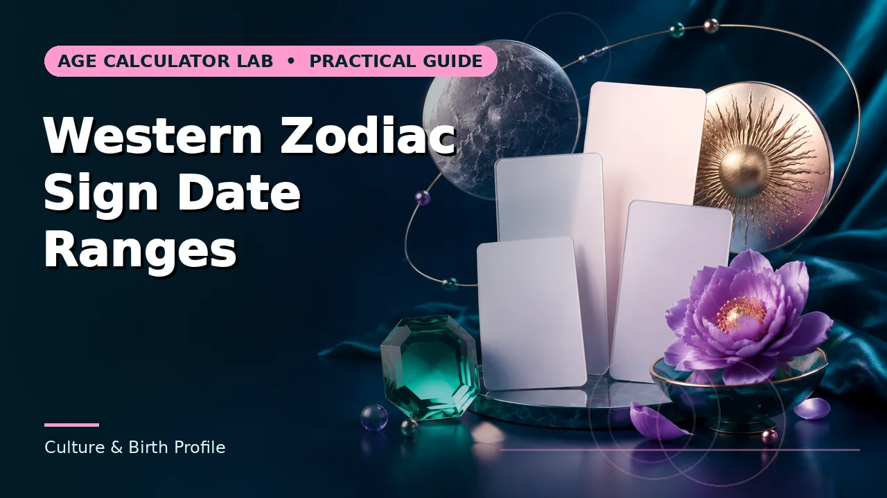
Western Zodiac Date Ranges and Why Sources Disagree
Sun-sign dates come from a fixed tropical scheme, but cusp dates shift by a day between years and between sources.
Read the guide →
Chinese Zodiac Years and the Lunar New Year Boundary
The animal changes at Lunar New Year, not on 1 January — so January and early-February births frequently belong to the previous year's animal.
Read the guide →
Birthstones and Birth Flowers by Month
Both are month-based traditions with more than one authoritative list, so the answer depends on which tradition you are following.
Read the guide →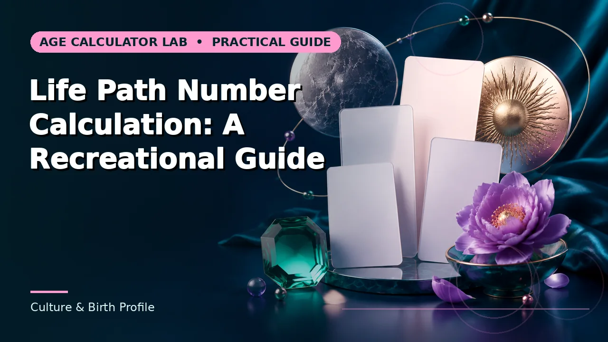
Life Path Numbers: The Method and Its Variations
Reduce the digits of a birth date to a single number, keeping 11, 22 and 33 — though practitioners disagree on how to reduce.
Read the guide →
Adding Months to a Date Without Breaking It
Adding a month means moving the month and keeping the day number — except when the destination month is too short to hold it.
Read the guide →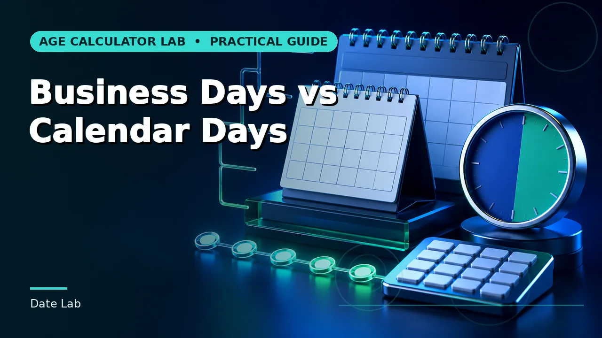
Business Days vs Calendar Days: Reading the Definition
A business-day count depends on three separate decisions, and the phrase itself specifies none of them.
Read the guide →
Gregorian Leap Year Rules, and Why the Shortcut Fails
Divisible by four, except centuries, except centuries divisible by four hundred — three rules that exist to correct an eleven-minute error.
Read the guide →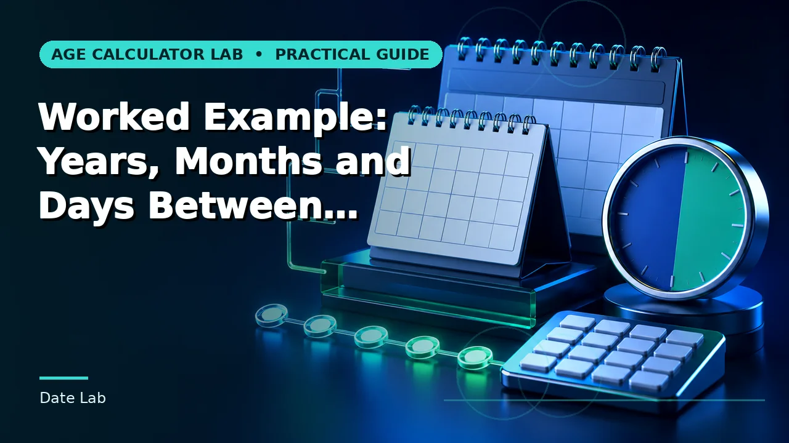
Years, Months and Days Between Two Dates: A Worked Example
Following the count step by step shows exactly where the common shortcuts go wrong.
Read the guide →
Weekday, Day of Year and Week Number: Three Different Labels
One date carries several positional labels, and each uses a different convention — including which year it belongs to.
Read the guide →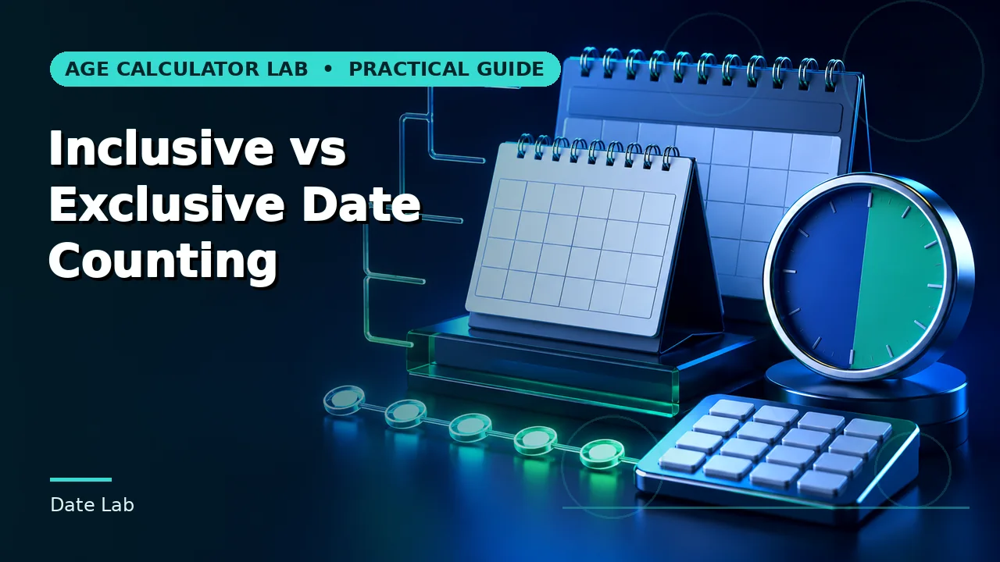
Inclusive vs Exclusive Date Counting
Two tools counting the same two dates can differ by one, two, or zero — depending on which endpoints each decided to count.
Read the guide →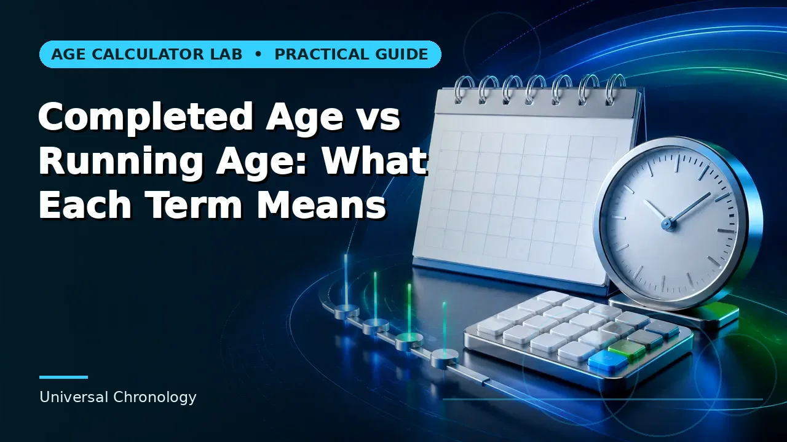
Completed Age vs Running Age
Completed age counts birthdays already reached; running age describes the year of life in progress, and is one higher.
Read the guide →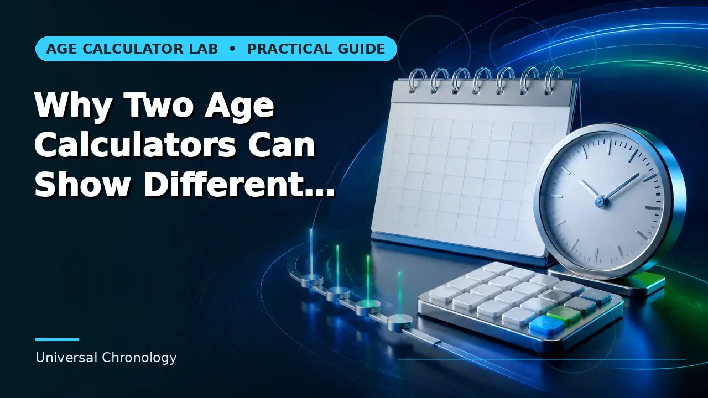
Why Two Age Calculators Give Different Answers
Almost every disagreement is a convention difference rather than an error — and there are only about six conventions in play.
Read the guide →
February 29 Birthdays: Anniversaries, Gaps and Legal Age
A leap-day birth date recurs every four years, with an eight-year gap around most century years — and the legal anniversary is decided by jurisdiction.
Read the guide →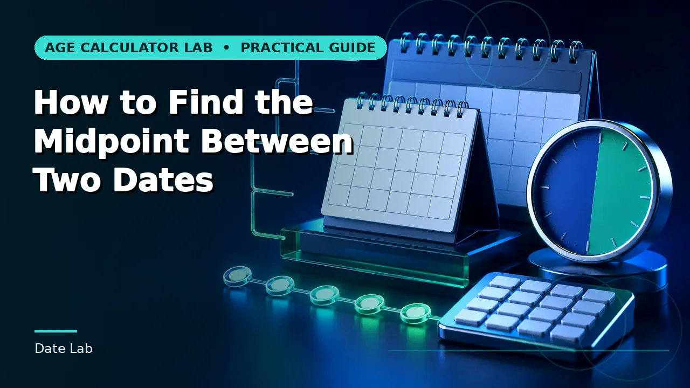
Finding the Midpoint Between Two Dates
The midpoint is the halfway instant, which lands on a whole date only when the span contains an even number of days.
Read the guide →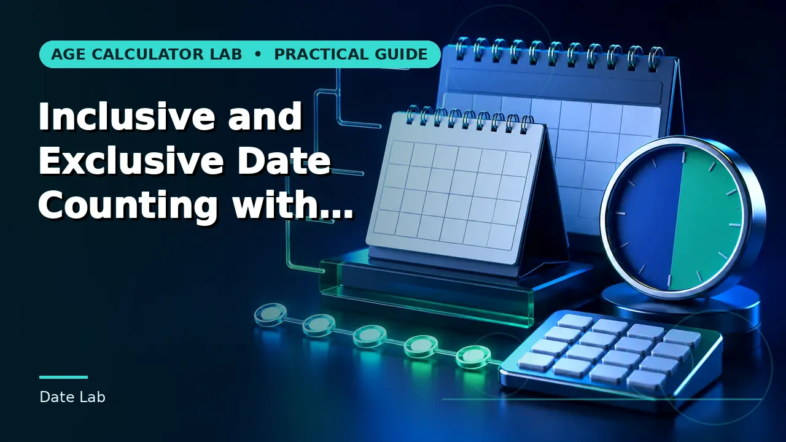
Inclusive Date Counting: Ten Cases Where It Changes the Answer
The convention is simple; recognising which one a real document means is the hard part. These are the cases that come up.
Read the guide →
Adding Business Days Without Losing Count
Adding business days means stepping forward one day at a time and only counting the ones that qualify — not multiplying by a ratio.
Read the guide →
Recurring Date Schedules: Rules That Survive the Year
A repeating schedule is a rule plus a set of exceptions, and the failure mode is baking the exceptions into the rule.
Read the guide →
Documenting Employment Tenure and Anniversaries
Tenure records fail at handover, so the test of a good one is whether a stranger can rebuild the figure without asking you.
Read the guide →
Planning Age Across Several Life Milestones at Once
When one birth date has to be checked against a series of future dates, calculate each independently rather than stepping from one to the next.
Read the guide →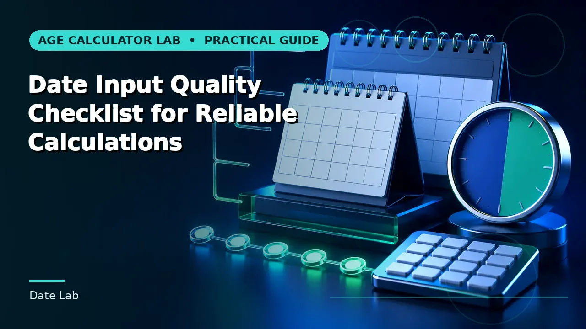
A Date Input Checklist Worth Running Before You Calculate
Nearly every wrong date result comes from a wrong date input, and inputs are checkable in a way that outputs are not.
Read the guide →
When a Calculator Is Not the Final Authority
A calculator produces arithmetic. Whether that arithmetic decides anything depends on a rule it has no knowledge of.
Read the guide →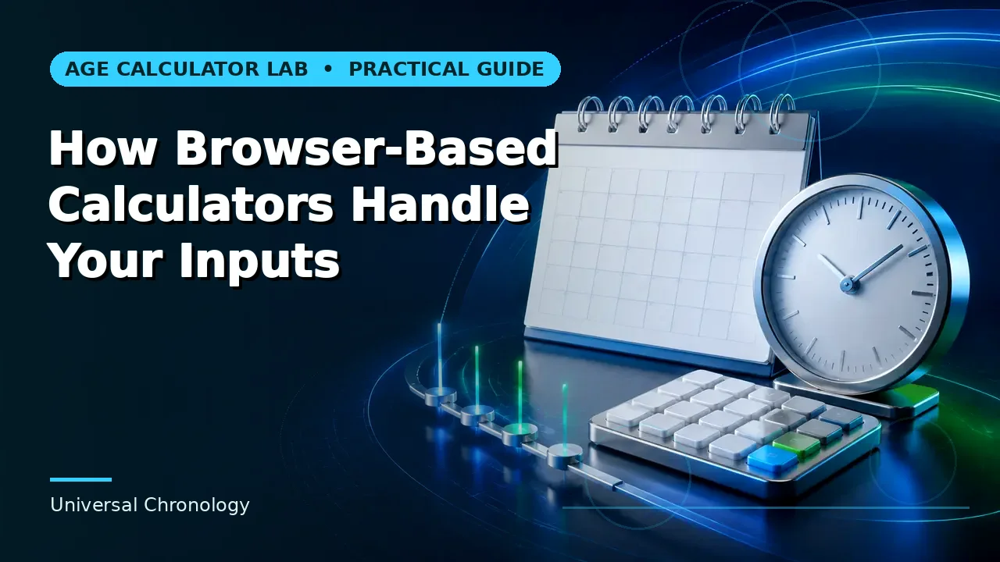
What Actually Happens to the Dates You Type Into a Calculator
A browser-based calculator computes on your device, so the values never reach a server — but that is a property of how it is built, not a promise.
Read the guide →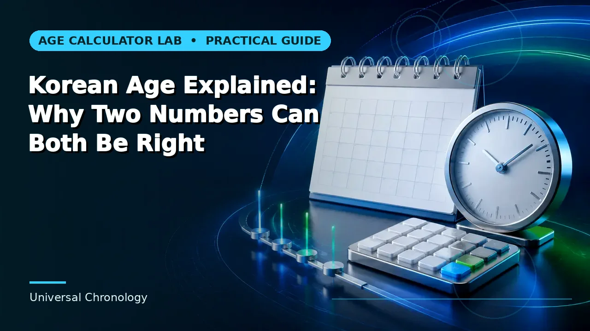
Korean Age Explained: Why Two Numbers Can Both Be Right
Korean age counts calendar years rather than completed birthdays, so it can sit one or two years above international age for the same person.
Read the guide →
East Asian Age Reckoning: Kazoedoshi, Virtual Age and Modern Practice
Traditional year-count age appears across East Asia under different names, with different survival rates in modern official use.
Read the guide →
Measuring Age in Quarters: When Three-Month Blocks Beat Years
Quarters give a coarser unit than months and a finer one than years, which suits reporting cycles, developmental checkpoints and cohort tracking.
Read the guide →
ISO Week Numbering Explained: Week 1, Week-Years and the Dates They Cover
ISO-8601 weeks always start on Monday and always contain a Thursday, which is why week 1 can begin in the previous December.
Read the guide →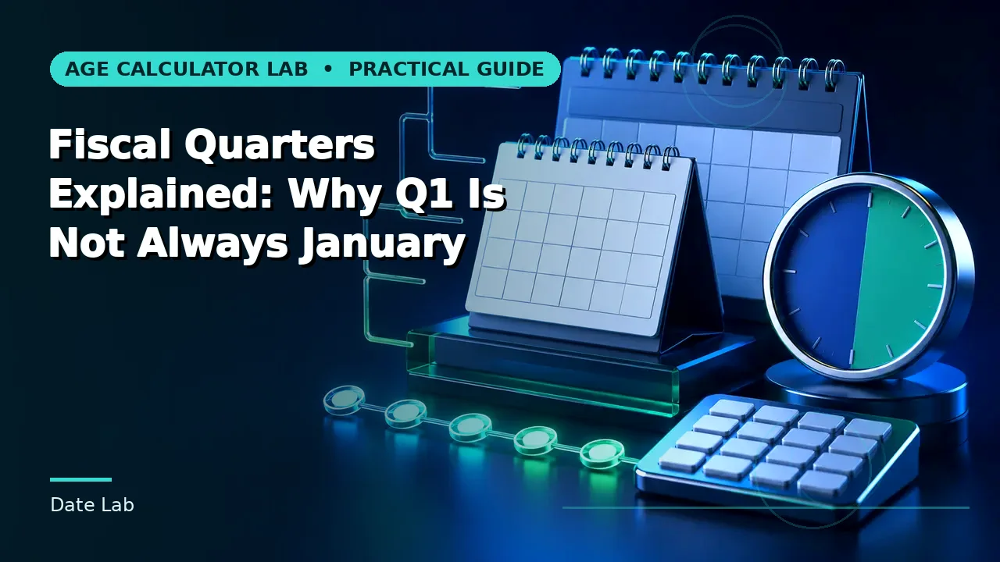
Fiscal Quarters Explained: Why Q1 Is Not Always January
A fiscal quarter is a three-month block measured from an organisation's chosen financial year start, which is often not January.
Read the guide →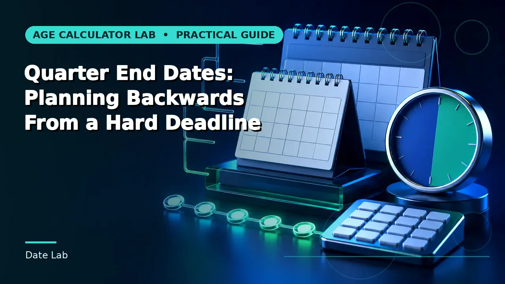
Quarter End Dates: Planning Backwards From a Hard Deadline
Quarter ends are fixed points that generate a cascade of earlier deadlines, and most of the risk sits in the days you did not count.
Read the guide →
Calculating Working Hours Between Two Dates
Working hours are a product of two decisions — which days count and how long a day is — and both need to be stated before the number means anything.
Read the guide →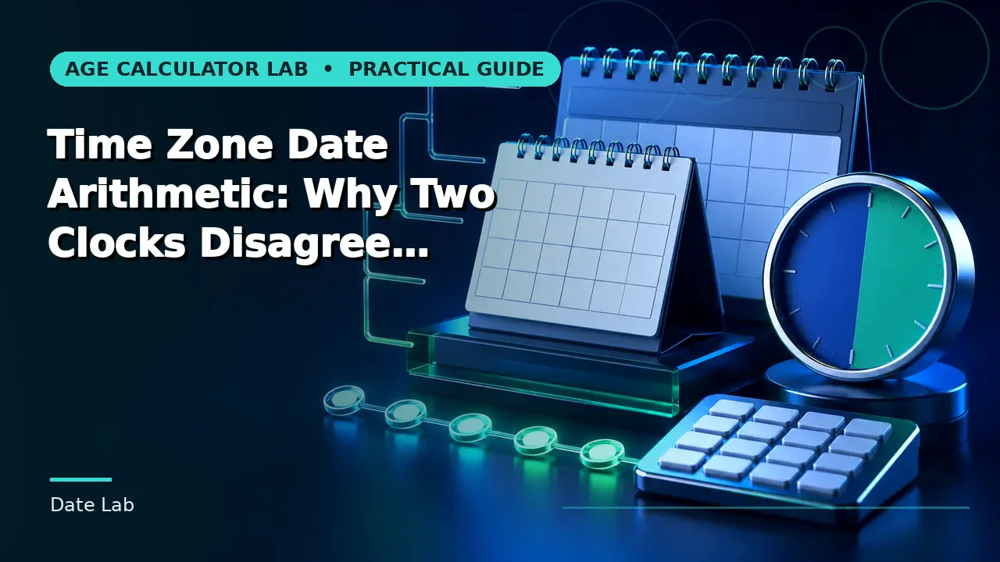
Time Zone Date Arithmetic: Why Two Clocks Disagree About Elapsed Time
Local times are labels, not instants. Comparing them directly produces intervals that can be off by a full day.
Read the guide →
Countdown Conventions: What 'Days Until' Actually Counts
Two countdowns to the same date can differ by a day without either being wrong, because they disagree about whether today counts.
Read the guide →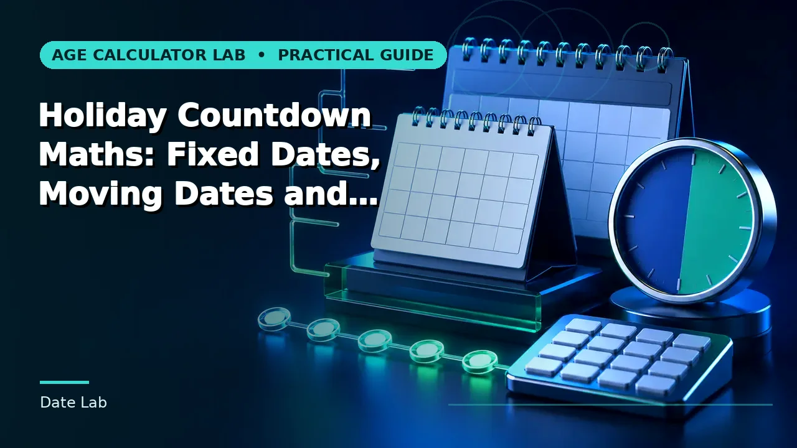
Holiday Countdown Maths: Fixed Dates, Moving Dates and Observed Dates
Some holidays sit on the same date every year, some move with a lunar or ecclesiastical rule, and some shift when they land on a weekend.
Read the guide →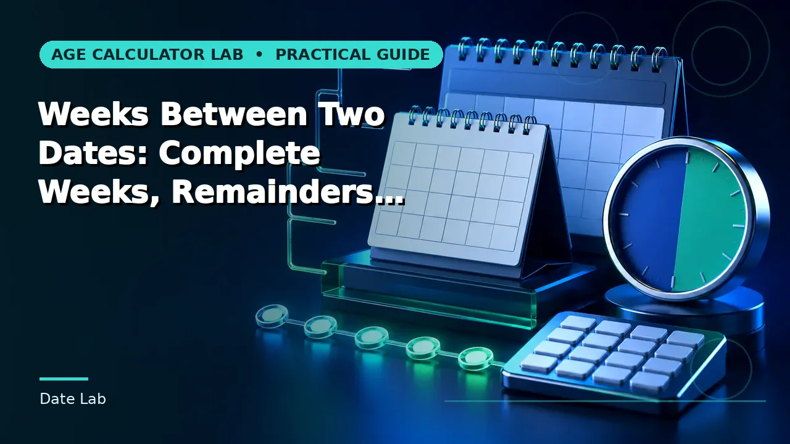
Weeks Between Two Dates: Complete Weeks, Remainders and Part-Weeks
A week count is a division with a remainder, and how you handle the remainder decides whether the answer is useful.
Read the guide →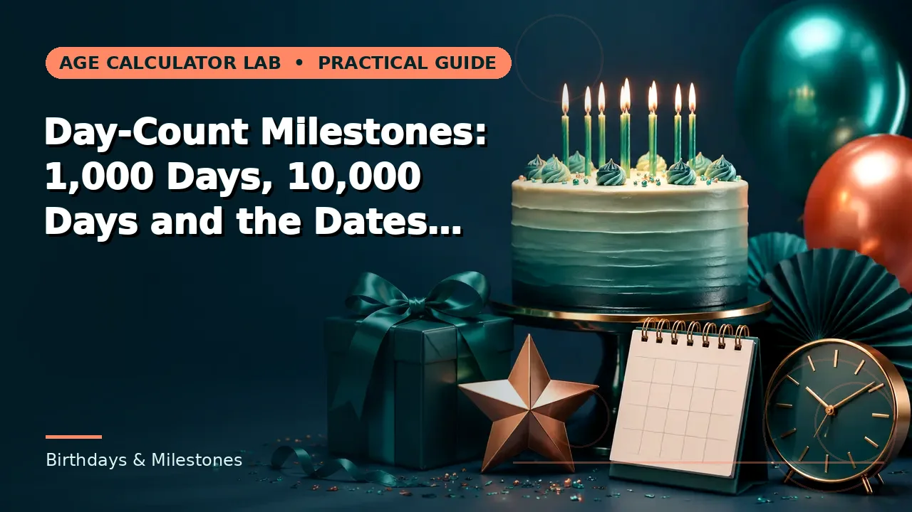
Day-Count Milestones: 1,000 Days, 10,000 Days and the Dates They Land On
Day-count milestones are exact because they are pure addition — no month lengths, no leap-year adjustments, no convention to argue about.
Read the guide →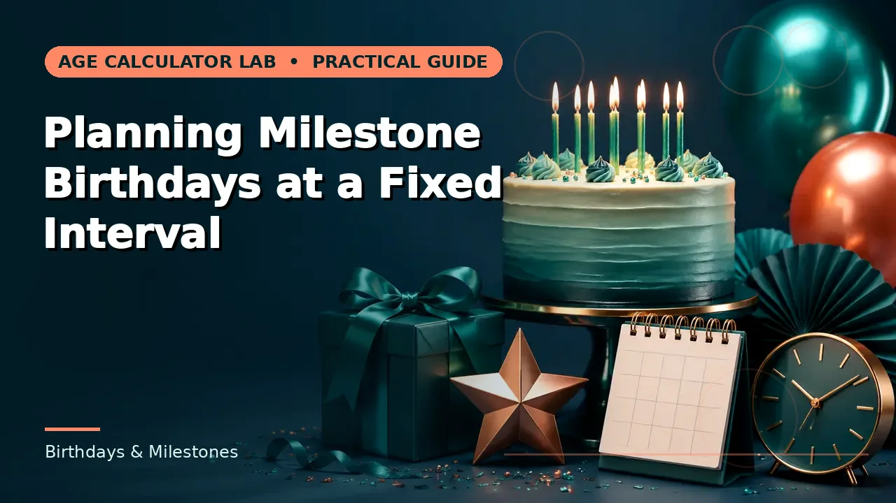
Planning Milestone Birthdays at a Fixed Interval
Milestone birthdays are calendar anniversaries, so they are found by adding whole years to a birth date rather than by adding days.
Read the guide →Quarter Birthdays and Other Fractional Birthday Traditions
A quarter birthday is three calendar months after a birth date, and like half birthdays it needs an end-of-month rule to be well defined.
Read the guide →
Reverse Due Date Calculation: Working Backwards From Gestational Age
If you know the current gestational age, you can recover the implied last menstrual period and project the estimated due date from it.
Read the guide →
IVF Due Dates: Why Transfer Date Gives a More Precise Estimate
With IVF the conception date is known rather than estimated, so the due date is calculated from the transfer date and the embryo's age.
Read the guide →
Pregnancy Countdowns: Reading Days Remaining Alongside Gestational Age
A countdown to a due date and a gestational age describe the same pregnancy from opposite ends, and each is useful for different questions.
Read the guide →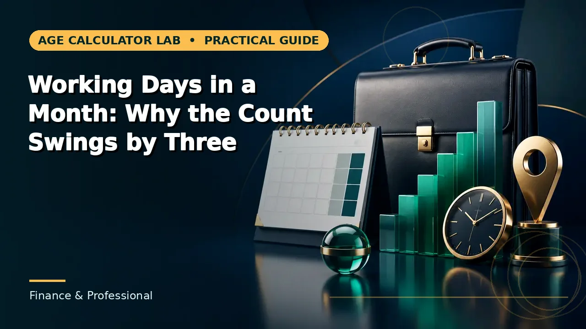
Working Days in a Month: Why the Count Swings by Three
Months contain between 19 and 23 weekdays before holidays, which is enough variation to distort any monthly plan built on an average.
Read the guide →
Calculating a Notice Period End Date
Notice periods can be defined in working days, calendar days, weeks or months, and each definition produces a different end date from the same start.
Read the guide →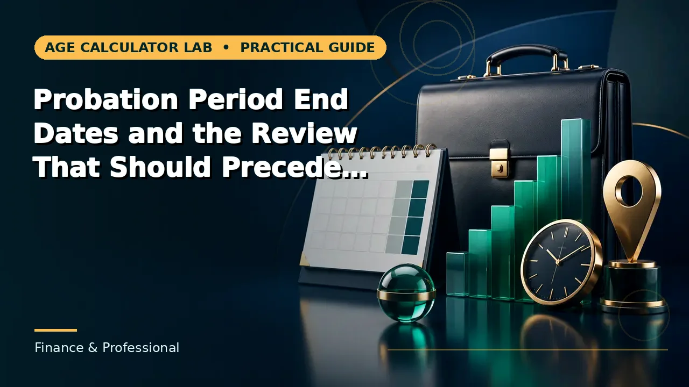
Probation Period End Dates and the Review That Should Precede Them
A probation period defined in months ends on a calendar anniversary, and the review that decides its outcome has to happen before that date.
Read the guide →
Long Service Milestones: Continuous Service and the Dates That Break It
Long service entitlements depend on continuous service, which is a defined term rather than simply the time since the start date.
Read the guide →
Term Date Planning: Building a Repeating Academic Schedule
A term schedule is a repeating rule plus a set of exceptions, and the exceptions are what make it worth calculating rather than typing.
Read the guide →Measuring Semester Length in Weeks, Days and Teaching Time
A semester has a calendar length and a teaching length, and the gap between them is where planning goes wrong.
Read the guide →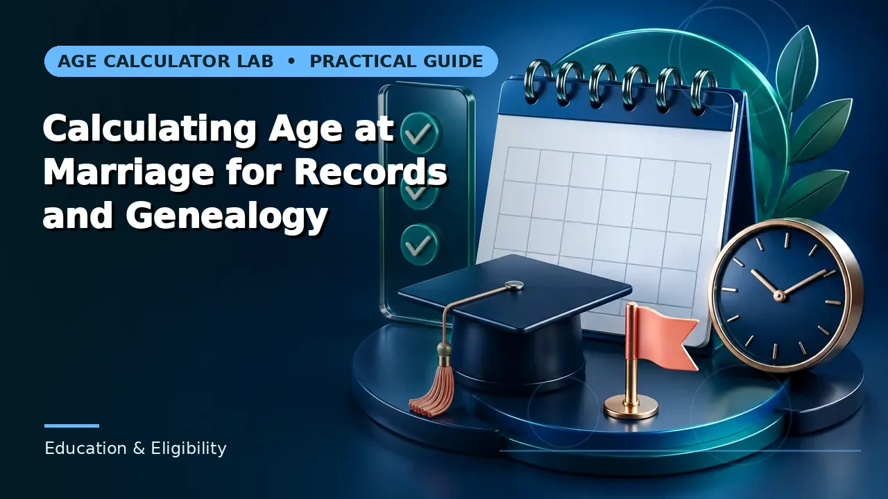
Calculating Age at Marriage for Records and Genealogy
Age on a wedding date is a straightforward calendar calculation, but the records it comes from often are not.
Read the guide →
Sleep Debt Arithmetic: What the Number Can and Cannot Tell You
Sleep debt is a simple subtraction repeated across nights, and its usefulness depends entirely on the target you subtract from.
Read the guide →
Lifetime Screen Time Estimates and Why They Are So Sensitive
Lifetime totals multiply a daily average across thousands of days, which magnifies any error in the average by the same factor.
Read the guide →